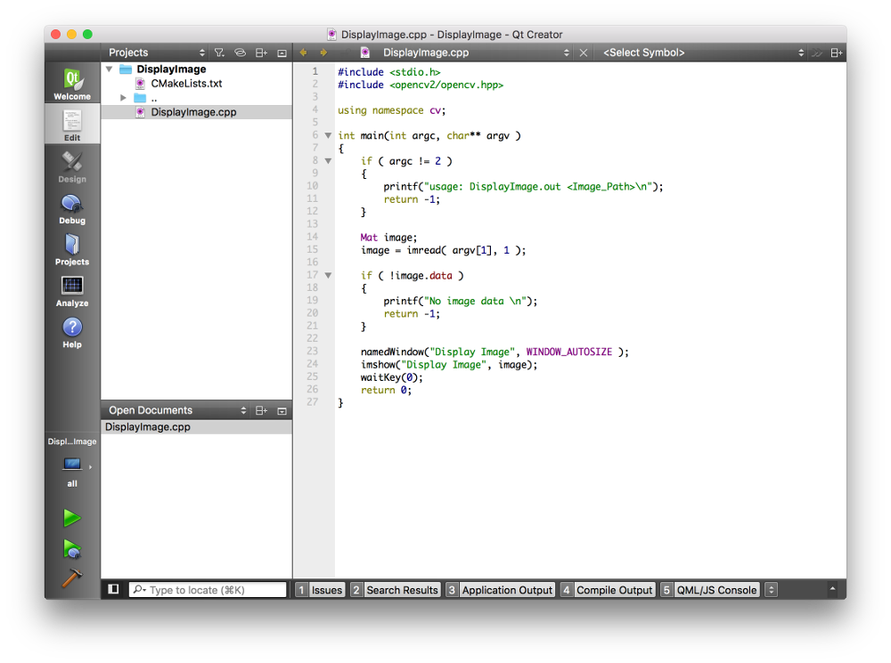

I have used both OpenCV Library and Qt Creator IDE back in my academic days. I have developed or more precisely experimented with both a lot. In my blog, you may find a couple of articles about both as well. A couple of years ago, I switched to OSX and my general interests were in Android mobile apps development using Java. Recently, I have got a chance to work with OpenCV again. I'm one of the guy who prefers an IDE over command line tools and text editors to work on projects. So, this article is about setting up and using the best C++ IDE ever, the Qt Creator for developing OpenCV projects.
There exist an open source package manager called brew for mac. If you don't have brew installed on your machine, install brew first.
$ ruby -e "$(curl -fsSL https://raw.githubusercontent.com/Homebrew/install/master/install)"Once brew is up and running good, install OpenCV from the science tap.
$ brew tap homebrew/science
$ brew install opencvNote that on almost all machines, the gcc compilation step takes a lot of time. Give enough time, get a coffee or something, and in an hour or so, it will be ready. You can see the installations files using the following command.
$ brew list opencvOpenCV 3.x has been released recently. If you want to leverage the coolest features, try installing opencv3
This is also quite straight forward. Go to Qt website and download Qt and buy the appropriate license. If you want to run Qt for free, you should develop and release all of your Qt Create projects as FOSS project compliant with GPLv2/3. For individual non-commercial GPL use, you may head to the Download site here. Download the .dmg file and drag the Qt Creator App into the global /Applications folder. You have now both OpenCV and Qt Creator installed and ready.
An OpenCV project can be nothing but a single C/C++ file. Here is an example below.
#include <stdio.h>
#include <opencv2/opencv.hpp>
using namespace cv;
int main(int argc, char** argv ) {
if ( argc != 2 ) {
printf("usage: DisplayImage.out <Image_Path>\n");
return -1;
}
Mat image;
image = imread( argv[1], 1 );
if ( !image.data ) {
printf("No image data \n");
return -1;
}
namedWindow("Display Image", WINDOW_AUTOSIZE );
imshow("Display Image", image);
waitKey(0);
return 0;
}It does nothing but opens an image file and shows it in a named window. Now, to compile this, you can manually use g++ or whatever C++ compiler you have on your machine. But, rather, we need to add support for CMake, so that Qt Creator can pickup the project. My CMakeLists.txt file looks something like below. Note that, the file name should be exactly the same.
cmake_minimum_required(VERSION 2.8)
project( DisplayImage )
find_package( OpenCV REQUIRED )
include_directories( ${OpenCV_INCLUDE_DIRS} )
add_executable( DisplayImage DisplayImage.cpp )
target_link_libraries( DisplayImage ${OpenCV_LIBS} )The CMake file explains which library to link, and what kind out output to build and such things. Bascially it generates a MakeFile, which can be used in the subsequent make step of the building process. Before firing up the Qt Creator, lets see if this builds the project correctly. For this step, lets use in-source-building. A nice CMake tutorial can be found here.
$ cmake .
$ makeThis will build the source code and creates a binary name DisplayImage. You can try if it is working fine by supplying an image as an argument.
$ ./DisplayImage some_image.jpgIf this opens the image file in a named window, we are good so far. If it does not, we have messed up at some stages before. Check your OpenCV installation is good, and if required, reinstall it.
This is now quite easy. Fire up Qt Creator, and look for out CMakeLists.txt file. Select it and it will open up a CMake Wizard dialog. Choose an out-of-source build folder this time, since we can keep the source tree clean with that configuration. This means, all your build related files will be inside this build folder, and the source folder will not be cluttered with any other files, other than your source code. Click Continue, and click Run CMake and it will generate a MakeFile for the project and we are done! Ta Da! Now, we have our first OpenCV project in Qt Creator ready to work with. Look how beautiful it is. 
In case, if Qt Creator fails find the cmake binary, you can manually point the cmake location. To find the location of cmake on a Linux/OSX machine, run.
$ which cmakeYou can also configure this at a later point from Preferences > Build & Run > CMake > Add.